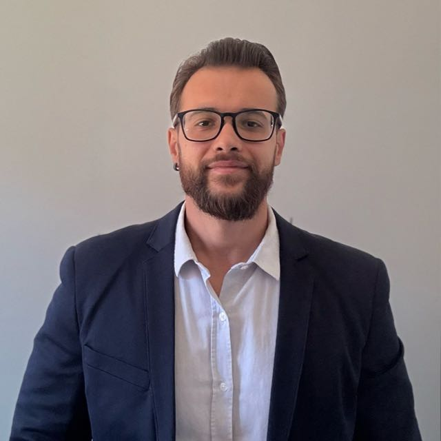

01 /
Direito Bancário
Orientação em questões jurídicas envolvendo relações com bancos e instituições financeiras.
Atuação jurídica em Direito Bancário, Família e Sucessões, Contratos, Execuções e Direito Criminal, com orientação clara e atendimento responsável.

Cada situação exige atenção aos detalhes, análise responsável e comunicação clara. Entre em contato para apresentar sua demanda e verificar as possibilidades de atendimento.
Orientação em questões jurídicas envolvendo relações com bancos e instituições financeiras.
Atuação em demandas familiares e questões relacionadas a heranças e sucessões.
Análise e orientação em relações contratuais, obrigações e responsabilidades.
Acompanhamento de procedimentos de execução e análise das medidas cabíveis.
Orientação e defesa técnica em questões da área criminal, com respeito ao devido processo legal.
Conversa inicial para compreender a demanda e avaliar os próximos passos possíveis.
Gabriel Knappe conduz o atendimento com foco na escuta, na clareza das informações e na responsabilidade profissional. O objetivo é que cada pessoa compreenda sua situação jurídica e tenha mais segurança para avaliar os próximos passos.
O trabalho é pautado pela ética, pelo sigilo profissional e pelo respeito às particularidades de cada demanda.
Fale diretamente com Gabriel Knappe pelo WhatsApp ou envie um e-mail para apresentar sua necessidade.
Telefone: (51) 99735-1679
E-mail: advgabrielknappe@gmail.com
Localização: Cachoeira do Sul – RS, Brasil